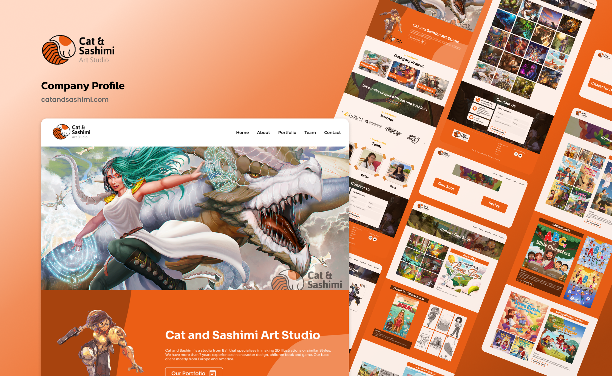

Industri kreatif bertaraf internasional sangat mengandalkan rekam jejak visual yang profesional. Cat & Sashimi Art Studio membutuhkan sebuah platform mandiri untuk memamerkan portofolio ilustrasi mereka secara eksklusif kepada klien potensial yang mayoritas berada di kawasan Eropa dan Amerika.

Tata letak situs web Cat & Sashimi yang dirancang khusus untuk menonjolkan detail aset ilustrasi.
Seniman dan studio ilustrasi sering kali memanfaatkan platform komunitas daring untuk memamerkan karya mereka. Walaupun platform tersebut mampu memberikan eksposur awal, penggunaan platform pihak ketiga memiliki batasan yang signifikan dalam membangun identitas merek secara mandiri. Klien potensial mudah terdistraksi oleh karya seniman lain yang direkomendasikan oleh algoritma platform tersebut.
Selain itu, Cat & Sashimi Art Studio memiliki spesialisasi layanan yang sangat spesifik, yaitu desain karakter, ilustrasi buku anak, dan pembuatan aset permainan video. Mereka membutuhkan sebuah medium untuk mengkategorikan karya-karya tersebut secara rapi agar klien dapat langsung menemukan portofolio yang sesuai dengan kebutuhan Projects mereka.
Situs web profil perusahaan dirancang untuk menjawab kebutuhan tersebut. Platform ini bertindak sebagai galeri virtual yang merangkum identitas studio ke dalam satu wadah yang terintegrasi. Pengunjung tidak hanya disuguhi galeri gambar, tetapi juga diarahkan secara strategis menuju formulir Contact untuk menginisiasi kerja sama bisnis.
Tantangan terbesar dalam merancang situs web portofolio seni adalah memastikan agar desain antarmuka tidak mengalahkan keindahan karya seni itu sendiri. Elemen antarmuka harus bertindak sebagai bingkai yang mendukung, bukan sebagai pesaing visual.
Psikologi Warna: Saya memilih warna jingga sebagai identitas visual utama situs web ini. Warna jingga secara psikologis melambangkan kreativitas, kehangatan, dan energi yang dinamis. Warna
ini sangat merepresentasikan semangat Cat & Sashimi sebagai studio ilustrasi yang berbasis di Bali.
Tata Letak Grid Portofolio: Karya seni disajikan menggunakan sistem tata letak grid yang rapi. Pengunjung dapat memilih kategori yang diinginkan, seperti ilustrasi buku atau aset gim, dan
sistem akan menampilkan kumpulan karya tanpa memuat ulang halaman secara keseluruhan.
Hierarki Informasi: Halaman utama disusun untuk memandu perjalanan pengunjung. Dimulai dari perkenalan studio dengan ilustrasi pahlawan yang memukau, dilanjutkan dengan ulasan mitra bisnis,
pengenalan tim seniman, dan diakhiri dengan formulir Contact untuk memfasilitasi kerja sama.
Situs web yang memuat puluhan gambar berkualitas tinggi sangat rentan terhadap masalah penurunan kecepatan muat halaman. Kinerja yang lambat dapat menyebabkan pengunjung dari luar negeri meninggalkan situs sebelum karya seni sempat ditampilkan.
Untuk mengatasi hal ini, tahap pengembangan web difokuskan pada optimalisasi prapemuatan aset. Implementasi teknik pemuatan tunda digunakan secara ketat, sehingga peramban hanya akan mengunduh gambar apabila gambar tersebut masuk ke dalam area pandang pengguna. Selain itu, integrasi formulir Contact yang terhubung langsung dengan sistem surel studio memastikan bahwa setiap permintaan Projects dari klien dapat diterima dan ditanggapi secara cepat.
Menyediakan ruang eksklusif bagi studio untuk menonjolkan kualitas ilustrasi.
Manajemen aset visual yang baik memastikan situs tetap dapat diakses dengan cepat.
Mempermudah calon klien luar negeri untuk mempelajari profil dan menghubungi studio.
Sebagai penutup, pengembangan situs web Cat & Sashimi menunjukkan bahwa perpaduan antara desain antarmuka yang tematik dan rekayasa kinerja web yang teliti mampu menghasilkan aset digital yang sangat berharga. Profil perusahaan ini berhasil mentransformasi kumpulan karya seni menjadi instrumen bisnis yang sah, yang mampu meningkatkan kepercayaan klien global terhadap talenta seniman lokal Bali.